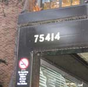
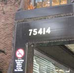

Phone Interface
You can get real-time arrival info on your cellphone. Just call our number, enter your stop number, and have real-time bus arrival info read over your phone.
Quick Start
-
Find your stop number.
 

- Call 206-456-0609.
- Press 1 to enter a stop number.
- Enter your stop number, followed by the # sign.
- Listen as real-time arrival info is read to your over the phone.
Tips and Tricks
- How can I get arrival info for just a single route?
- How can I bookmark a stop?
- How can I access my bookmarked stops?
- How can I search for stop?
- How can I access my most recent stop?
How can I get arrival info for just a single route?
At busy stops, it can take a while to read all the arrival information, but you often want to know about just one route.
- Wait until arrival information is being read for a specific stop (see Quick Start for more details).
- Press 1.
- Enter your route number, followed by the # sign.
- Listen as specific arrival information for that route is listed.
- To go back to the full listing of all routes, press *.
How can I bookmark a stop?
It can be annoying to have to remember the stop numbers that you frequently use. Fortunately, you can bookmark your frequent stops for quick access.
- Wait until arrival information is being read for a specific stop (see Quick Start for more details).
- Press 2.
- Your stop is now bookmarked
How can I access my bookmarked stops?
From the main menu, press 3. At this point, your bookmarks will be listed by address. You can quickly access each bookmark by pressing 1, 2, 3, etc for the number corresponding to each bookmark.
How can I search for stop?
If the stop number is missing from the posted schedule, you can search for stops by route number.
- From the main menu, press 6.
- Enter your route number, followed by the # sign.
- Select the final destination of the route from the list.
- Pick amongst the neighborhoods and street addresses listed for your route until you find the appropriate stop.
How can I access my most recent stop?
If you've recently checked the arrival information for your stop and wish to quickly access the same stop on your next call, simply enter 5 at the main menu.